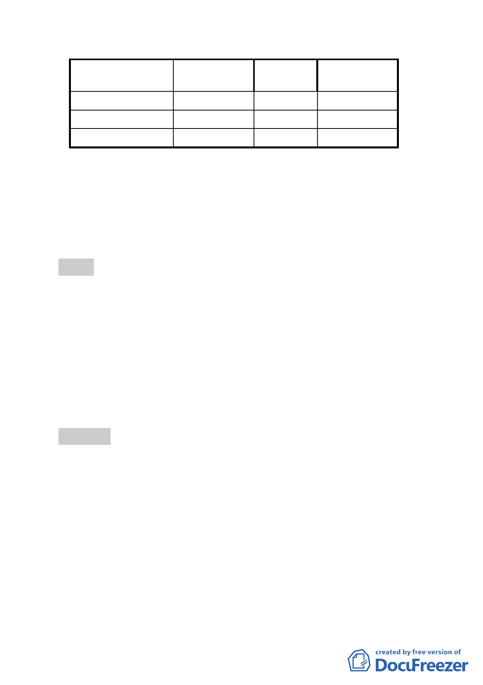

項目
排水溝用地
保護區
合計
變更後面積
(公頃）
0.099
1.362
3.966
百分比
(％)
2.50
34.34
100
較公展計畫
增減面積
-0.053
0
六、 全案係市府97年7月10日公展並以府都規字第09732907403
號函送到會。
七、 公民或團體所提意見：計45件。
八、 申請單位：臺北市政府。
九、 法令依據：都市計畫法第27條第1項第4款。
決議：本案防洪調節池投資金額龐大，且基地位辛亥捷運站附近，
土地資源珍貴，市府的規劃應該得到更多民眾認同與支
持；請市府水利處針對防洪設施規劃究係以防災公園形式
或防洪調節池形式、設計工法採透水式或不透水水泥池、
以及本區總合治水對策規劃之成效等議題進一步研究，將
研究結果向地方居民說明、溝通並蒐集民眾意見後，再提
會討論。
肆、散會（11 時 50 分）
- 13 -